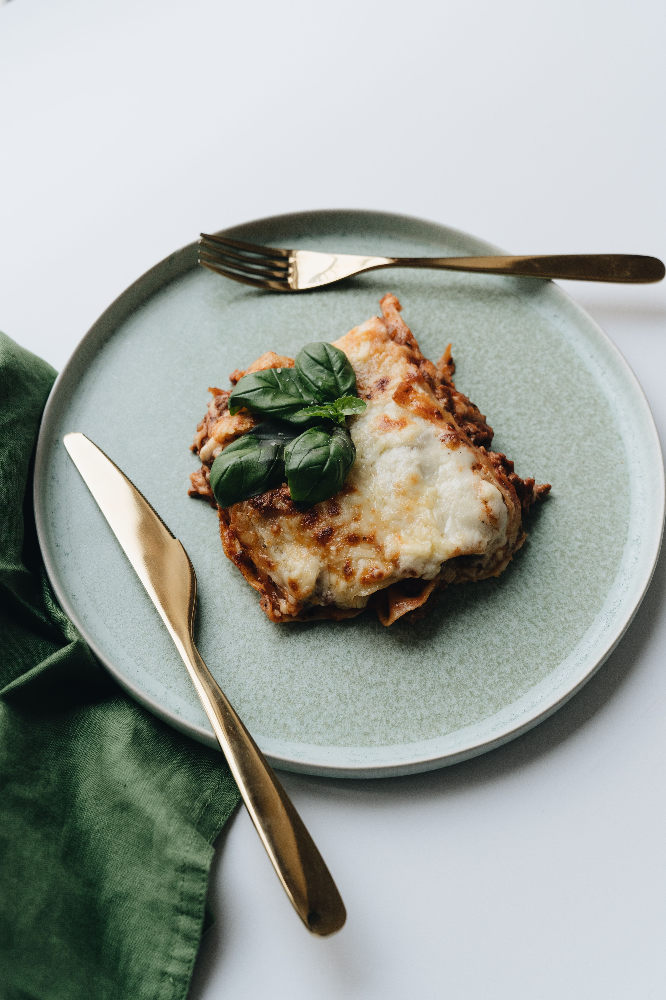

Homemade Lasagna
It’s a shame that so many bad versions of this popular Emilian dish are found in fast food restaurants and ready-made in supermarkets. When made properly, lasagne is a delicious comfort food and is always a popular choice in my house for Sunday lunch or when we have a crowd. It can be made in advance and baked when required. It is made with the famous ragù Bolognese and egg pasta sheets typical of this region. I tend to use the dried lasagne sheets so readily available in shops but you can use fresh or even make your own!
Ingredients
For the Bolognese Ragù
- See Bolognese Ragù recipe
For the Béchamel Sauce:
- 40g butter
- 40g plain flour
- 500ml milk
- Salt and black pepper
- 100g grated Parmesan cheese
- About 8 x dried egg lasagne sheets
Method
- First make the Bolognese Ragù - see recipe here
- Preheat the oven to 200 degrees centigrade.
- Make the white sauce – melt the butter in a small pan on a medium heat, remove from the heat, stir in the flour with a small hand whisk (this will avoid lumps from forming) until you get a paste, stir in a little milk. Return to the heat, add the remaining milk and stirring all the time, cook on a medium heat for about 3 to 4 minutes until the sauce begins to thicken. Remove from the heat, season with salt and pepper and stir in about a third of the grated parmesan.
- Line an ovenproof dish with a little of the Bolognese sauce, arrange sheets of lasagne over followed by more sauce, then a layer of white sauce, sprinkle some grated parmesan and continue making layers like this until you have used up all the ingredients ending with a topping of white sauce and grated parmesan cheese.
- 1Bake in the hot oven for about 30 - 35 minutes until golden-brown. Remove, leave to rest for a couple of minutes and serve
- About 8 x dried egg lasagne sheets